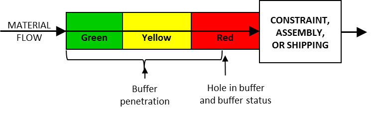

буфер времени (time buffer) - Защита от неопределенности, которая принимает форму времени. Буферы ограничений, сборки и отгрузки, используемые в планировании барабана-буфера-каната, и производственный буфер, используемый в упрощенном барабане-буфере-канате, являются примерами временных буферов.
Иллюстрация: Временной буфер для заказа на выполнение работ:

См.: буфер сборки, буфер, буфер емкости, барабан-буфер-канат, буфер барабана, буфер питания, буфер проекта, буфер доставки.
См.: буфер мощности
Синоним: time buffer